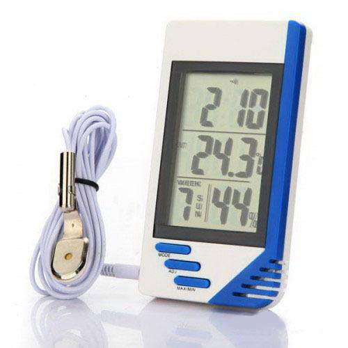

Nama Anggota Kelompok
- Faidul Fajar Marpaung : 161111833
- Michael William Butarbutar : 161113575
- Putra Pratama Sagala : 161111558
- Natanael Hutagalung : 161113460
- Egia Pratama : 161111434
Deskripsi
Dalam pengukuran suhu, terdapat berbagai metode dan cara. Salah satunya dengan metode otomatis. Metode otomatis adalah metode yang segalanya serba otomatis, sehingga tidak melibatkan manusia untuk pekerjaan tersebut. Alat pengukur suhu otomatis dapat diletakkan dimana saja dan dapat berfungsi secara terus-menerus selama ada sumber daya (baterai atau listrik).Alat pengukur suhu ruangan otomatis ini dapat digunakan untuk pemantauan suhu dan kelembaban di ruangan
Kini selain untuk mengukur suhu ruangan, kita juga bisa menggunakan fungsi jam, alarm, dan kalender sekaligus dalam satu alat. Kami jual temperatur digital multifungsi yang bisa mengukur temperatur udara, tingkat kelembaban udara, dan fungsi lainnya juga. Sehingga Anda pun bisa menggunakan berbagai fungsi di satu alat. Sangat praktis dan efisien.
Gambar Pengatur Suhu

Pengatur Suhu Ruangan
Pengatur Suhu Ruangan memiliki berbagai jenis, seperti thermohgrometer yaitu analog dan digital. Thermohygrometer digital seperti gambar diatas menunjukkan suhu dan kelembapan dengan angka yang jelas sedangkan thermohygrometer analog (gambar bawah) berupa jarum untuk menunjukkan suhu dan kelembapan.
Kelebihan dan Kekurangan Produk
kelebihan
Kelebihan thermohygrometer digital adalah mudah membaca angka suhu dan kelembapan dibandingkan dengan thermohygrometer analog,Data yang dihasilkan lebih cepat dari termometer air raksa. Termometer ini hanya membutuhkan waktu beberapa detik saja untuk menampilkan data pada layar,Bentuknya yang fleksibel dan beragam cocok digunakan untuk berbagai macam kebutuhan,Dilengkapi fitur alarm yang dapat memberi notifikasi mengenai pengukuran,Angka pengukuran ditampilkan melalui layar, sehingga tampak jelas. Sekalipun digunakan pada, ruangan yang gelap, termometer model digital ini telah dilengkapi penerangan, Lebih aman ketika digunakan.
Kekurangan
Kekurangan thermohygrometer digital adalah dimana Harga relatif lebih mahal. Sebab fitur-fitur yang dimiliki lebih baik daripada termometer ar raksa, Memerlukan baterai sebagai penyuplai energi agar termometer dapat berfungsi.
Manfaat
Mengukur suhu ruangan adalah suatu hal yang perlu bagi sebagian orang, dengan mengukur suhu kita jadi tahu berapa suhu yang ada pada ruangan. Apakah terlalu dingin atau justru terlalu panas. Thermohygrometer selalu digunakan dalam fasilitas industri farmasi karena banyak bahan baku bersifat hygroskopis (menyerap air) dan kelembapan tinggi dapat menyebabkan masalah dalam formulasi bahan-bahan tersebut.
Pada fasilitas produksi kapsul sangat penting menjaga kelembapan selalu di bawah 40% karena gelatin bersifat hygroskopis. Bila terpapar kelembapan tinggi gelatin bisa lengket dan rusak. Selain untuk itu suhu dan kelembapan bisa menunjukkan kondisi kerja sehingga dapat mengetahui kinerja dari system udara di fasilitas produksi. Suhu dijaga suhu ruangan agar operator yang bekerja merasa nyaman.
Responsive Slides
Powered by bespoke-scale
Bullet List
Powered by bespoke-bullets
- Bullet 1
- Bullet 2
- Bullet 3
Syntax Highlighting
Powered by Lea Verou's Prism
(function() {
function hanoi(n, a, b, c) {
return n ? hanoi(n - 1, a, c, b)
.concat([[a, b]])
.concat(hanoi(n - 1, c, b, a)) : [];
}
return hanoi(3, 'left', 'right', 'mid')
.map(function(d) {
return d[0] + ' -> ' + d[1];
});
})();Named Route
Powered by bespoke-hash
Look up! This route has been named with a data-bespoke-hash attribute.
Just the beginning…
- Edit HTML markup in src/index.html
- Edit Stylus styles in src/styles/user.styl
- Edit JavaScript in src/scripts/main.js
- Enjoy! :) -@markdalgleish